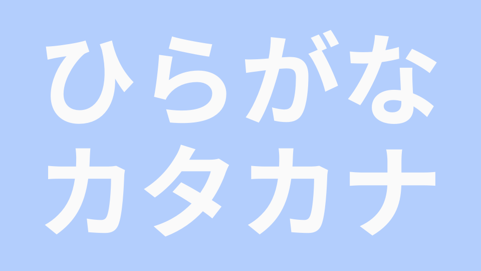
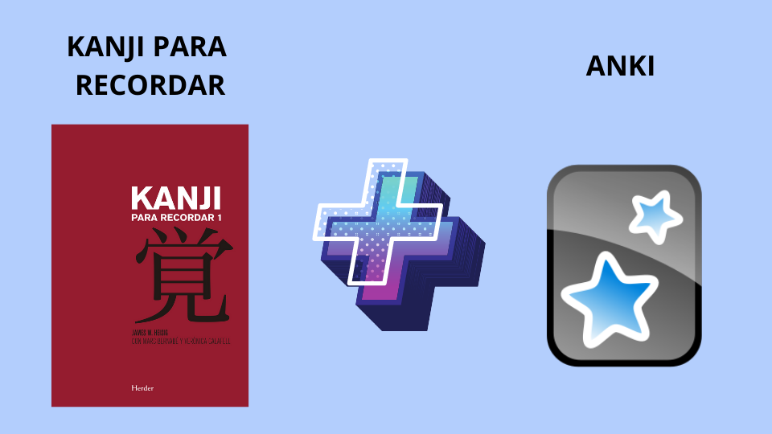

Guía de japonés
Aprendiendo las bases
Sistema de escritura
El idioma japonés se divide en 3 sistemas de escritura: "Hiragana", "Katakana" y "Kanji".
Kana
Cuando se habla de Kana nos referimos a Hiragana y Katakana. Estos son "alfabetos" fonéticos y es común encontrarlo también como silabario ya que un kana normalmente es equivalente a una sílaba de dos letras en nuestro idioma. A excepción de las vocales y el sonido 'n'.
El hiragana y el katakana son dos versiones de los mismos sonidos en el idioma, pero cada silabario tiene un uso en particular.
Hiragana
El hiragana es usado para escribir principalmente las palabras de origen japonés y para ciertos fines gramáticales.
Recomiendo ver el primer video de la lista para aprender con más detalle el uso de cada silabario y luego ver el segundo para aprender el orden de trazos y pronunciación del hiragana.
- Cómo Aprender Hiragana y Katakana (Guía Autodidacta por En japonés con Rafy)
- Hiragana (YUYU NIHONGO)
Katakana
El katakana es usado principalmente para la transcripción al japonés de palabras extranjeras que han sido adaptadas a la fonética del japonés. Así, "tacos" se convierte en タコス (takosu), "México" se convierte en メキシコ (mekishiko) y "soccer" se convierte en サッカー (sakkā).
Algunos usos del katakana:
- Escribir palabras prestadas de otros idiomas
- Escribir nombres extranjeros
- Escribir onomatopeyas
- Ser usado como elemento resaltador
Al igual que con el hiragana, recomiendo ver el primer video de la siguiente lista para conocer más usos del katakana y el segundo video para aprender los trazos.
- Cómo Aprender Hiragana y Katakana (Guía Autodidacta por En japonés con Rafy)
- Katakana (YUYU NIHONGO)
Kanji
Es el tercer tipo de escritura que debemos aprender y que son logogramas importados del chino. Deberemos aprender por lo menos los 2136 kanji considerados de uso cotidiano por el Ministerio de educación japonés.
Considero que la mejor forma de aprender a reconocer kanji es usando el libro de kanji para recordar y el programa Anki.
Para mayor información sobre el método de kanji para recordar recomiendo ver el primer video de esta lista y luego el segundo y tercer video para aprender a instalar Anki en nuestra computadora.